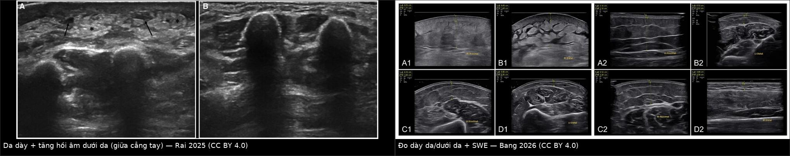
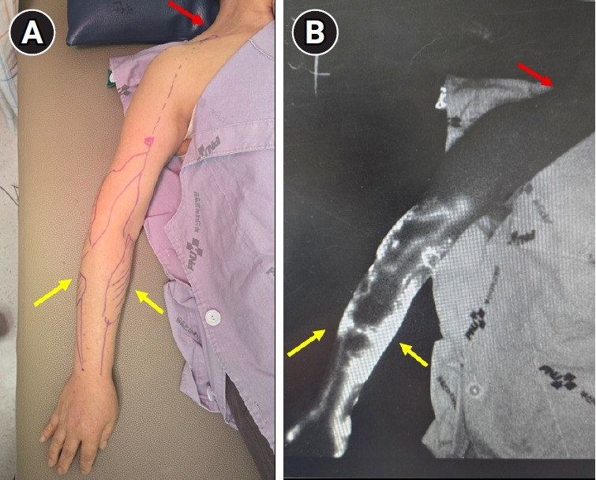
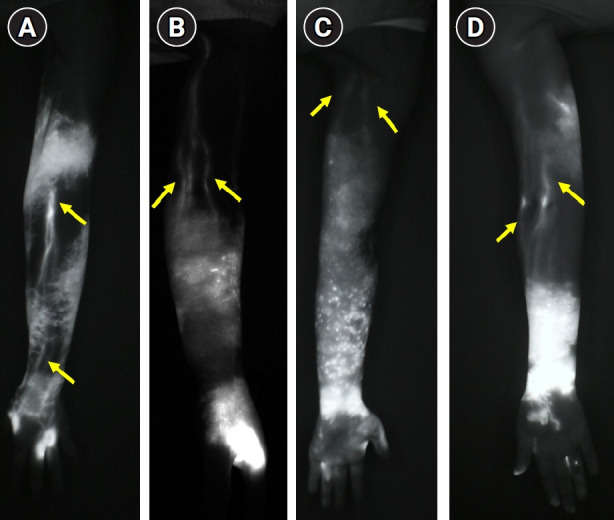
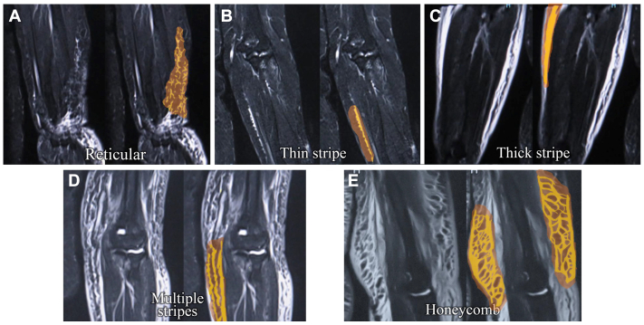

593 — Phù bạch mạch chi trên sau điều trị ung thư vú (BCRL): chẩn đoán hình ảnh, phân độ & xử trí / Breast cancer-related lymphedema
Tags: pattern:phu-bach-mach pattern:phu-mo-mem pattern:day-da vung:chi-tren vung:vu score:ISL score:MDACC-ICG protocol:sieu-am protocol:MRI protocol:lymphoscintigraphy protocol:ICG
Mức chắc chắn (certainty): tổng hợp y văn (literature synthesis) — nhóm tự biên từ y văn mở (Europe PMC/PMC: Frontiers in Oncology 2026, British Journal of Radiology 2025, Diagnostics 2026, Ann Rehabil Med 2026, J Vasc Surg Venous Lymphat Disord 2025) + trích số từ bài không mở toàn văn (Med Oncol 2024 — review of reviews; số liệu PREVENT trích qua PMC13225956). Ảnh CC BY 4.0 (được ghép) và CC BY-NC(-ND) (giữ nguyên bản).
1. Tổng quan — "bơm" bạch mạch hỏng sau mổ nách + cơ chế hình ảnh
- Định nghĩa: phù bạch mạch liên quan ung thư vú (breast cancer-related lymphedema — BCRL) là suy bơm bạch mạch mạn tính (low-output failure) sau tổn thương hệ bạch mạch nách do mổ nách ± xạ vùng hạch, dẫn tới ứ dịch giàu protein ở mô dưới da cánh tay/cẳng tay/bàn tay (và có thể cả vú, thành ngực).
- Vì sao phải chẩn đoán sớm: triệu chứng nặng/nặng tay xuất hiện trước phù khách quan — trong một nghiên cứu, tăng kích thước cánh tay xuất hiện trung vị 6,1 tháng trước khi phù đo được; giai đoạn 0 (dưới lâm sàng) đã có rối loạn vận chuyển nhưng chưa phù nhìn thấy → nếu chỉ chờ "nhìn thấy phù" là đã bỏ lỡ cửa sổ điều trị.
- Ngưỡng định lượng bắt buộc:
- Tần suất: ~1/5 (≈20%) người điều trị ung thư vú; 16–21% trong các loạt BCRL (PMC13225956; PMC13512224); ước tính 140–250 triệu người phù bạch mạch toàn cầu.
- Theo loại phẫu thuật (5 năm tích lũy): ALND 24,9%, ALND + xạ vùng hạch 30,1%, SLNB 8%, SLNB + xạ 10,7% (PMC13225956).
- Theo phẫu thuật (Hàn Quốc, toàn quốc): chung 12,2%; BCS + SLNB 8,0%, cắt toàn tuyến + SLNB 10,7%, BCS + ALND 23,5%, cắt tuyến triệt căn cải biên 28,5% (PMC13225956).
- Yếu tố nguy cơ khác: cắt toàn tuyến RR 1,42 (1,15–1,76) so với bảo tồn; tái tạo vú giảm nguy cơ — IRR 0,58 (0,38–0,87) trên 15.670 bệnh nhân (PMC13225956).
- Định nghĩa định lượng: tăng thể tích ≥ 10% hoặc chu vi ≥ 2 cm; BIS L-Dex > 10; phân độ nặng theo ISL: nhẹ > 5%, trung bình 20–40%, nặng > 40% thể tích chi (PMC12012379).
- MFBIA (multifrequency bioimpedance): ngưỡng tỷ lệ giữa hai chi ≥ 1,139 (tay thuận là bên bệnh) hoặc ≥ 1,066 (tay không thuận là bên bệnh) (PMC13512224).
- TẠI SAO hình ảnh trông như vậy (vật lý + mô bệnh):
- T2/STIR rất sáng: dịch bạch mạch giàu protein có T2 ~600 ms ở 3,0 T → cần STIR/T2 fat-sat mới thấy rõ các kênh bạch mạch giãn và mô dưới da ứ dịch (PMC12012379).
- "Honeycomb"/"cobblestone": dịch quấn quanh vách xơ giữa các tiểu thùy mỡ → hình tổ ong trên CT/MRI/US; không gặp trong phù do tĩnh mạch hay lipodystrophy (PMC12012379).
- Dày da: ứ dịch + xơ hóa trung bì → da dày, hồi âm tăng; SWE tăng độ cứng chỉ ở giai đoạn lâm sàng (khi đã xơ), không tăng ở giai đoạn dưới lâm sàng (PMC13512224).
- Dermal backflow (DB): khi kênh dẫn sâu tắc, bạch mạch ở trung bì phải gánh dòng → trên ICG thấy "vệt loang" thay vì đường tuyến tính; DB càng lan rộng = bệnh càng nặng (PMC13329518).
- Vì sao giai đoạn muộn không còn lõm: mô mỡ tăng sinh + xơ hóa thay thế dịch → non-pitting, đây là lúc CDT ít hiệu quả và cần hút mỡ/liposuction.
- Phản biện (fidelity + critique): hiệu quả của CDT có bằng chứng trung bình, nhưng MLD không thêm lợi ích thể tích so với phần còn lại của CDT; bài tập cải thiện đau/chất lượng sống nhiều hơn thể tích; hiệu ứng lớn hơn ở giai đoạn muộn (Med Oncol 2024, PMID 39438358) → đừng hứa "xẹp tay" bằng MLD đơn thuần.
2. Mẫu hình (pattern) + chẩn đoán phân biệt theo bối cảnh (Gamut)
- Khuôn 1 — Phù mềm, ấn lõm, giảm khi nâng tay/qua đêm. Gamut: BCRL giai đoạn I vs phù do thuốc vs phù do tim–thận vs huyết khối tĩnh mạch. Chốt: một chi, cùng bên điều trị, Stemmer (+), giảm khi nâng cao → BCRL.
- Khuôn 2 — Phù cứng, không lõm, dày da, "tổ ong" dưới da. Gamut: BCRL giai đoạn IIb–III (xơ + mỡ) vs lipedema vs phù do suy tĩnh mạch mạn. Chốt: tiền sử mổ nách/xạ + honeycomb + dày da + không đối xứng → BCRL.
- Khuôn 3 — Phù + đỏ, nóng, đau, sốt. Gamut: viêm mô tế bào/erysipelas (biến chứng của BCRL) vs huyết khối tĩnh mạch vs tái phát u. Chốt: sốt + đỏ lan nhanh + bạch cầu tăng → nhiễm trùng; siêu âm Doppler bắt buộc để loại huyết khối.
- Khuôn 4 — Phù mạn + nốt/tím/loét mới. Gamut: Stewart–Treves (angiosarcoma trên phù bạch mạch) vs viêm mô tế bào tái diễn vs huyết khối vs tái phát da. Chốt: nốt/tím không đáp ứng kháng sinh → sinh thiết (bài 1602).
- Khuôn 5 — Phù + đau vai/đau chi + yếu tay. Gamut: tái phát hạch nách/xâm lấn đám rối cánh tay vs xơ hóa sau xạ (radiation fibrosis) vs bệnh thần kinh do xạ. Chốt: đau kiểu thần kinh + yếu/dị cảm + khối hạch → MRI/PET-CT; xơ xạ không có khối.
- Khuôn 6 — Phù hai chi hoặc chi đối bên. Gamut: phù hệ thống (tim/thận/gan) vs lipedema vs phù do thuốc vs BCRL hai bên (hiếm). Chốt: đối xứng + toàn thân + không liên quan mổ nách → tìm nguyên nhân hệ thống.
- Gợi nhớ "RISK" cho BCRL: Radiation vùng hạch, Infection (viêm mô tế bào tái diễn), Surgery ALND (nhiều hạch lấy hơn), Kilograms (BMI cao).
3. Bảng so sánh phân biệt (ma trận đối chiếu)
| Thực thể (entity) | Hình ảnh điển hình | Chốt vào (rule-in) | Chốt loại (rule-out) | Gợi ý xác nhận |
|---|---|---|---|---|
| BCRL | Phù một chi cùng bên; US: dày da, dày dưới da, hồi âm tăng, cobblestone; MRI STIR/T2FS: dịch dưới da, honeycomb, dày da; LS: DB, chậm/không hiện hạch nách; ICG: DB theo mức | Tiền sử ALND/RLNR + phù một chi + Stemmer (+) + honeycomb/dày da | Phù đối xứng, toàn thân, không tiền sử mổ nách → không phải BCRL | Chu vi ≥ 2 cm hoặc thể tích ≥ 10%; L-Dex > 10; US/MRI |
| Viêm mô tế bào / erysipelas | Dày da khu trú, đỏ, nóng, tăng tưới máu; có thể ổ áp-xe; không theo giải phẫu bạch mạch | Sốt + đỏ nóng lan nhanh + đáp ứng kháng sinh | Phù đối xứng, không sốt, mạn tính → không phải nhiễm trùng | Lâm sàng + CRP/BC; US loại áp-xe/huyết khối |
| Huyết khối tĩnh mạch (TM dưới đòn/nách) | TM không xẹp khi ép, thrombus trong lòng, Doppler không dòng; phù cấp | Phù cấp một chi + đau + TM không xẹp khi ép | TM xẹp bình thường + phù mạn → loại huyết khối | Doppler mạch máu |
| Tái phát hạch nách/xâm lấn đám rối | Khối hạch mất rốn mỡ, vỏ dày, xâm lấn; MRI ngấm, DWI sáng; PET dương | Khối hạch mới/không đối xứng + đau thần kinh + PET dương | Không khối, chỉ phù/dày da → nghiêng BCRL | Siêu âm + FNA/core; MRI/PET-CT |
| Stewart–Treves (angiosarcoma) | Da–dưới da, nhiều ổ (59,3%), bờ không rõ (92,9%); T1 trung gian (84,2%), T2 trung gian/hỗn hợp; ADC thấp 0,77–0,96 × 10⁻³ mm²/s | Chi phù mạn + nốt/tím/loét mới + MYC (+) | Chỉ phù đều, không nốt, ổn định → không phải sarcoma | Sinh thiết sâu + MYC (bài 1602, 523) |
| Xơ hóa sau xạ / bệnh đám rối do xạ | Da dày đều trong trường xạ, mô xơ không ngấm, không khối; teo cơ, thay đổi tín hiệu thần kinh | Tiền sử xạ + thay đổi đối xứng theo trường chiếu + không khối | Khối/ngấm/DWI sáng → không phải xơ đơn thuần | MRI; EMG nếu nghi thần kinh |
| Lipedema / phù hệ thống | Phù hai chi đối xứng, mô mỡ dày, bàn chân không phù (lipedema); phù toàn thân kèm báng/tràn dịch | Đối xứng + bàn chân thoát + toàn thân | Một chi, cùng bên mổ nách → không phải lipedema | Lâm sàng + xét nghiệm tim/thận/gan |
| Seroma/lymphocele sau mổ | Tụ dịch khu trú dưới da/thành ngực, không ngấm (trừ vỏ), co nhỏ | Tụ dịch khu trú + không ngấm + giảm dần | Dịch lan toàn chi + dày da → không phải seroma | Siêu âm; chọc hút nếu cần |

Trái: da dày, mô dưới da tăng hồi âm và có vùng dịch (dấu hoa thị) ở giữa cẳng tay — bệnh nhân ung thư vú phải đã mổ + xạ. Phải: kỹ thuật đo dày da/dưới da và shear-wave elastography ở nhiều vị trí, so sánh hai chi. Ảnh ghép letterbox, CC BY 4.0 (Rai P et al., Br J Radiol 2025, PMC12012379; Bang MH et al., Diagnostics 2026, PMC13512224).Phân độ — dùng đúng thang, đừng trộn
- ISL (lâm sàng): 0 — dưới lâm sàng (không phù dù vận chuyển đã rối loạn); I — phù mềm, giảm khi nâng cao chi, còn lõm; II — không giảm khi nâng cao; IIa còn lõm, IIb không lõm (xơ); III — lymphostatic elephantiasis: da dày sừng, nhú, biến dạng chi.
- MDACC ICG (hình ảnh chức năng): 0–V theo mức dermal backflow và mất dần kênh tuyến tính; 0–I còn kênh tuyến tính liên tục, IV–V DB lan tỏa/không còn kênh (PMC13329518).
- Taiwan Lymphoscintigraphy Staging (TLS): L-0, P-1, P-2, P-3, T-4, T-5, T-6 dựa trên hiện hình hạch gần tại 120 phút, hạch xa, ống dẫn và DB (PMC12012379). Thêm SPECT/CT làm thay đổi phân độ 15,4% ca so với planar — nhưng tăng liều xạ/chi phí.
- NMRI stage (MRI không cản quang): dựa trên pattern reticular → thin stripe → thick stripe → multiple stripes → honeycomb; 70,8% vùng khảo sát có bất thường (95,4% bệnh nhân); stage cao tương quan với ICG stage (rs = 0,83) và UEL index (rs = 0,65) (PMC11999599).

Bệnh nhân BCRL: (A) chiếu bản đồ mạch nông lên da, (B) ảnh ICG tương ứng — mũi tên vàng = dermal backflow, mũi tên đỏ = đường thoát cuối. Nguồn: Suami H, Yoon JA, Ann Rehabil Med 2026, Fig. 2, CC BY-NC 4.0 (giữ nguyên bản).
Các kiểu DB (khu trú → đoạn → vùng → lan rộng → lan tỏa) và mức còn kênh chức năng; mũi tên = mạch bạch mạch còn thông. Đây là cơ sở để chọn vị trí nối bạch mạch–tĩnh mạch (LVA) và hướng dẫn MLD. Nguồn: Suami H, Yoon JA, Ann Rehabil Med 2026, Fig. 3, CC BY-NC 4.0 (giữ nguyên bản).
T2-weighted DIXON: các kiểu reticular, thin stripe, thick stripe, multiple stripes, honeycomb — từ nhẹ đến nặng. Nguồn: Kageyama T et al., J Vasc Surg Venous Lymphat Disord 2025, Fig. 2, CC BY-NC-ND 4.0 (giữ nguyên bản).4. Protocol chẩn đoán – theo dõi – điều trị + lưu đồ
- Trước mổ (baseline bắt buộc): đo chu vi 4 điểm cả hai chi + perometry (nếu có) + BIS làm mốc; giáo dục bệnh nhân về triệu chứng nặng/tức.
- Theo dõi sau mổ: mỗi 3–6 tháng trong 2–3 năm đầu (nhóm ALND/RLNR), sau đó hằng năm; BIS có thể phát hiện dưới lâm sàng: trong PREVENT, theo dõi bằng BIS giảm tiến triển 7,9% vs 19,2% so với đo chu vi (trích trong PMC13225956) — nhưng MASCC chỉ coi BIS là tùy chọn (PREVENT có khác biệt yếu tố nền).
- Chẩn đoán hình ảnh theo câu hỏi lâm sàng:
- Siêu âm (đầu tay): đo dày da/dưới da ở giữa cánh tay (chi trên) hoặc giữa cẳng chân (chi dưới); tìm cobblestone, tăng hồi âm, dịch; SWE tăng độ cứng khi đã xơ. Bắt buộc Doppler nếu phù cấp/đau để loại huyết khối.
- Lymphoscintigraphy ⁹⁹ᵐTc-nanocolloid: đánh giá vận chuyển và DB, phân độ TLS; SPECT/CT khi cần định vị (đổi phân độ 15,4%).
- ICG lymphography: bản đồ kênh chức năng + DB, độ sâu 2–4 cm (hạn chế ở người béo); là chuẩn vàng để chọn vị trí LVA và hướng MLD.
- MRI (STIR/T2FS hoặc T2-DIXON): đo dịch dưới da, honeycomb, dày da; tư thế "superman" cho chi trên; CE-MRL (0,5–2 mL gadolinium nội bì/nội hạch, độ phân giải ~1 mm³) khi cần vẽ giải phẫu trước mổ.
- CT: honeycomb, dày da, loại trừ hạch/tái phát; không là lựa chọn đầu tay vì liều xạ.
- Điều trị bảo tồn — CDT 2 pha (chuẩn nền):
- Pha 1 (2–4 tuần, intensive): băng ép nhiều lớp short-stretch, MLD, bài tập, chăm sóc da; giảm thể tích nhanh.
- Pha 2 (duy trì suốt đời): áo ép ít nhất class I khi thức, găng/tay áo chống phù bàn tay; tự MLD/bài tập; IPC hỗ trợ; kiểm soát cân nặng.
- Bằng chứng cần nói đúng: CDT giảm thể tích (bằng chứng trung bình); MLD thêm không cải thiện thể tích; bài tập cải thiện đau/chất lượng sống nhiều hơn thể tích (Med Oncol 2024).
- Điều trị ngoại khoa (chọn theo giai đoạn + mô):
- Dự phòng tại lúc mổ nách — LYMPHA/ILR: nối bạch mạch–tĩnh mạch ngay sau ALND; S-LYMPHA (37 ca, ICG-guided) ghi nhận 2,7% phù lâm sàng ở 6 tháng — dữ liệu khả thi/an toàn, chưa đủ chứng minh hiệu quả (PMC13599758).
- LVA (lymphaticovenous anastomosis): giai đoạn sớm–trung, còn kênh chức năng; chọn vị trí bằng ICG + siêu âm tần số cao.
- VLNT (vascularized lymph node transfer): chủ yếu ISL II–III (71,3% ca trong tổng quan là độ II; 11,2% độ I; 17,5% độ III).
- Hút mỡ (liposuction) ± compression: giai đoạn muộn, không lõm, mô mỡ–xơ chiếm ưu thế; giảm thể tích bền nhưng phải mang ép suốt đời.
- Khi nào nghi tái phát thay vì BCRL: phù mới/xấu nhanh, đau thần kinh, khối/hạch mới, nốt da → siêu âm + MRI/PET-CT + sinh thiết; đừng quy mọi thứ cho "phù sau mổ".
flowchart TD
A[Phù chi trên ở người đã điều trị ung thư vú] --> B{Phù MỘT chi cùng bên mổ nách?}
B -->|Không| C[DDx phù hệ thống/lipedema/huyết khối - xét nghiệm + Doppler]
B -->|Có| D{Đỏ nóng sốt HOẶC đau cấp?}
D -->|Có| E[Doppler loại huyết khối + CRP/BC: viêm mô tế bào?]
D -->|Không| F[Đo chu vi 4 điểm + thể tích +/- BIS L-Dex]
F --> G{Chu vi >= 2 cm HOẶC thể tích >= 10% HOẶC L-Dex > 10?}
G -->|Không| H[Theo dõi 3-6 tháng + giáo dục triệu chứng]
G -->|Có| I[Siêu âm: dày da/duới da, cobblestone, SWE]
I --> J{Cần phân độ/chọn mổ?}
J -->|Không| K[CDT pha 1 -> pha 2 + áo ép class I]
J -->|Có| L[ICG lymphography +/- lymphoscintigraphy +/- MRI]
L --> M{ISL I-II còn kênh chức năng?}
M -->|Có| N[LVA hoặc VLNT theo bản đồ ICG]
M -->|Không, xơ/mỡ không lõm| O[Liposuction + ép suốt đời]
K --> P{Phù nặng lên, đau thần kinh, nốt da, hạch mới?}
P -->|Có| Q[Siêu âm/MRI/PET + sinh thiết: loại tái phát/Stewart-Treves]
P -->|Không| K
5. Biến thể bình thường và cạm bẫy
- Cạm bẫy "phù là do mổ" — bỏ sót huyết khối: phù cấp một chi sau ung thư vú phải loại huyết khối tĩnh mạch (TM dưới đòn/nách) bằng Doppler trước khi quy cho BCRL.
- Cạm bẫy "đỏ = nhiễm trùng": erysipelas hay tái diễn trên nền phù bạch mạch; nhưng viêm mô tế bào cũng là yếu tố làm nặng phù → điều trị nhiễm trùng và duy trì CDT, không ngừng ép.
- Cạm bẫy "đo chu vi là đủ": chu vi bỏ sót phù dưới lâm sàng và không phân biệt dịch vs mỡ; ở giai đoạn muộn thể tích tăng do mỡ, nên giảm cân/hút mỡ khác hoàn toàn giảm dịch.
- Cạm bẫy "BIS thay thế mọi thứ": L-Dex không dùng được khi không có baseline hoặc phù hai chi; MASCC xem BIS là tùy chọn.
- Cạm bẫy "MLD là điều trị chính": MLD không thêm lợi ích thể tích khi đã có CDT đầy đủ; đừng bỏ áo ép + bài tập + chăm sóc da.
- Cạm bẫy "phù mạn là lành": phù bạch mạch mạn là nền của Stewart–Treves — nốt/tím/loét mới phải sinh thiết, không theo dõi kháng sinh dài.
- Cạm bẫy sau xạ: xơ hóa sau xạ gây dày da + phù + hạn chế vận động giống BCRL; khối/ngấm/DWI sáng mới gợi tái phát.
- Cạm bẫy "phù hai chi hiếm gặp": vẫn có thể do BIS/đo sai vị trí, thuốc, suy tim, hoặc lipedema; đừng gán BCRL mà bỏ qua bệnh nền.
- Cạm bẫy hình ảnh: honeycomb trên CT/MRI là dấu hiệu mạnh của phù bạch mạch nhưng không đặc hiệu cho BCRL — vẫn cần bối cảnh mổ nách/xạ.
6. Tự lượng giá — Blind Quiz
Ca 1 — Nữ 58 tuổi, 8 tháng sau ALND + xạ vùng hạch, tay phải nặng và to hơn. Đọc siêu âm.
- Hỏi: hai dấu hiệu nào trên siêu âm ủng hộ BCRL? Cần loại trừ gì trước khi kết luận?
Bấm để hiện đáp án (findings + chẩn đoán)
- Findings: da dày, mô dưới da dày và tăng hồi âm, có vùng dịch (dấu hoa thị); so sánh với chi đối diện thấy rõ bất đối xứng.
- Chẩn đoán: BCRL (giai đoạn ISL I–II tùy mức giảm khi nâng tay). Trước đó phải Doppler loại huyết khối và loại viêm mô tế bào nếu đỏ/nóng/sốt.
- Xử trí: CDT pha 1 → áo ép class I duy trì; đo lại chu vi/thể tích; BIS nếu có baseline.
- Nguồn ảnh: Rai P et al., Br J Radiol 2025, Fig. 2, CC BY 4.0 + Bang MH et al., Diagnostics 2026, Fig. 3, CC BY 4.0 (ảnh ghép letterbox).
Ca 2 — Cùng bệnh nhân, nghi phù nặng, cần đánh giá chức năng bạch mạch trước khi cân nhắc LVA. Đọc ICG.
- Hỏi: mũi tên vàng và mũi tên đỏ chỉ gì? DB nói lên điều gì về khả năng mổ?
Bấm để hiện đáp án (findings + chẩn đoán)
- Findings: mũi tên vàng = dermal backflow (vùng loang, mất đường tuyến tính); mũi tên đỏ = đường thoát cuối còn hiệu quả. Còn kênh tuyến tính ở một số vùng.
- Chẩn đoán: BCRL có DB khu trú/đoạn nhưng còn kênh chức năng → ứng viên LVA; DB càng lan tỏa, càng ít kênh → ưu tiên VLNT/hút mỡ.
- Bài học: ICG quyết định vị trí nối và hướng MLD, không chỉ để "chụp cho đẹp".
- Nguồn ảnh: Suami H, Yoon JA, Ann Rehabil Med 2026, Fig. 2, CC BY-NC 4.0 (giữ nguyên bản).
Ca 3 — Nữ 62 tuổi, phù tay 6 năm, nay nốt tím trên cẳng tay. Đọc MRI.
- Hỏi: các kiểu tín hiệu này nói gì về giai đoạn? Khi có nốt tím, MRI đủ để loại sarcoma chưa?
Bấm để hiện đáp án (findings + chẩn đoán)
- Findings: các kiểu reticular → thin stripe → thick stripe → multiple stripes → honeycomb tương ứng mức ứ dịch tăng dần; stage MRI cao tương quan với ICG stage (rs = 0,83) và UEL index (rs = 0,65).
- Chẩn đoán: BCRL giai đoạn tiến triển (nhiều khả năng ISL IIb–III). Nốt tím mới = nghi Stewart–Treves → sinh thiết sâu + MYC, MRI không thay thế mô bệnh.
- Nguồn ảnh: Kageyama T et al., J Vasc Surg Venous Lymphat Disord 2025, Fig. 2, CC BY-NC-ND 4.0 (giữ nguyên bản).
Bài liên quan chéo
- 500 – Tổng quan Hệ Vú & Sản Phụ khoa
- 522 – Theo dõi sau điều trị ung thư vú: nhũ ảnh/DBT, siêu âm, MRI & CEM
- 523 – Sarcoma mạch do xạ ở vú (RAAS)
- 589 – Sinh thiết hạch gác & cắt hạch nách có định hướng (TAD)
- 1602 – Hemangioma & tổn thương mạch lành tính của vú vs angiosarcoma
- 376 – U phần mềm KHÔNG mỡ: schwannoma vs sarcoma myxoid
- 1858 – VLNT khi LVA không còn mạch (phù bạch huyết chi sau điều trị ung thư vú)
Ảnh
images/composite_sieu-am-phu-bach-mach.jpg,images/593_phu-bach-mach_US_PMC12012379.jpg,images/593_phu-bach-mach_US-do-day_PMC13512224.jpg,images/593_phu-bach-mach_ICG_PMC13329518.jpg,images/593_phu-bach-mach_ICG-mau_PMC13329518.jpg,images/593_phu-bach-mach_MRI_PMC11999599.jpg,images/593_phu-bach-mach_MRI-do_PMC11999599.jpg. Nguồn + giấy phép từng ảnh trongimages/CREDITS.md.
Không dùng để chẩn đoán độc lập khi chưa có người hướng dẫn.